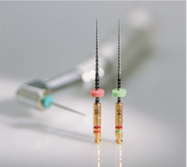
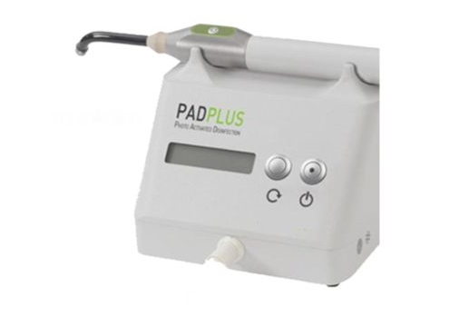

Elevating the level of Care in Dental Practice.
Roots Dental are the First to introduce the use of Surgial Operatting Microscope from Carl Zeiss, Germany for Root Canals Treatment in India.
This advanced technology is featured with Digital documentation and helps us greatly in delivering highly Efficient and Precision based treatments.
Microscopes are a great tool which assists us to Diagnose, Treat and Identify those which is not commonly seen by our anked eyes.
They provide best visualization and illumination of the tooth, thereby enabling us to treat challenging cases which is not treatable by convention approaches, leading to the highly successful outcomes of the treatment.
At Roots Dental we follow three stage sterilization protocol(Disinfection, Ultrasonic agitation & Autoclaving).
In addition, we have a Single-use policy on all files, burs and consumables.
Digital radiology is a form of x-ray imaging, where digital x-ray sensors are used instead of traditional photographic film.
Significantly reduces radiation exposure by 90% and images can be stored and transferred digitally.
At Roots Dental we use Digital Dental Radiology from Schick, Germany.
Painless Root Canal Treatment Achieving anaesthesia is a great challenge in Root Canal Treatments. Peope experience lot of pain during procedures when using conventional anaesthetic techniques. At Root Dental we use Quick Sleeper Single Tooth anaesthesia that achieves 98 pain reduction and reduces unwanted numbness which is experienced by conventional techniques.
Rotary Nickel-Titanium Instrumentatio- Innovative modern technology instruments with greater flexibility and resistance to fracture that assists us to more effectively clean and shape the root system, thereby Reduces the treatment time that aids in treatment of complicated case
Ultrasonic instruments are used during root canal treatment in conjunction with microscope- that aids in Minimal Invasive approach preserving natural tooth.
PAD stands for Photo_Activated Oral Disinfection it improves, treatment success of Root Canal Treatment in severely infected teeth, by eliminating a'l species of bacteria, it is very effective and help in faster healing How its works Is a minor procedure, in which a special liquid is introduced inside the root canals and exposure to special light, that kills all the bacteria in the root canals.
Thermoplastic Guttapercha : This specialised treatment technique used at Roots DentaI provides three-dimensional seaJ of root canals rendering to 99 oto success of Root Canal Treatments.